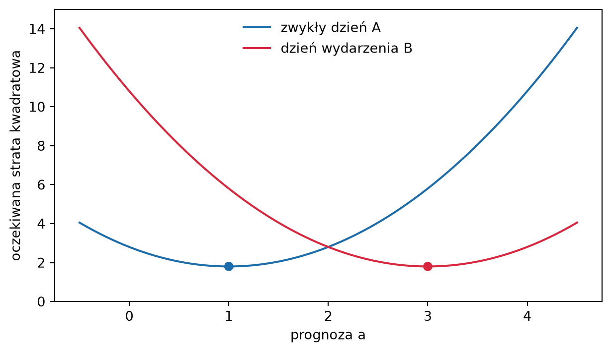
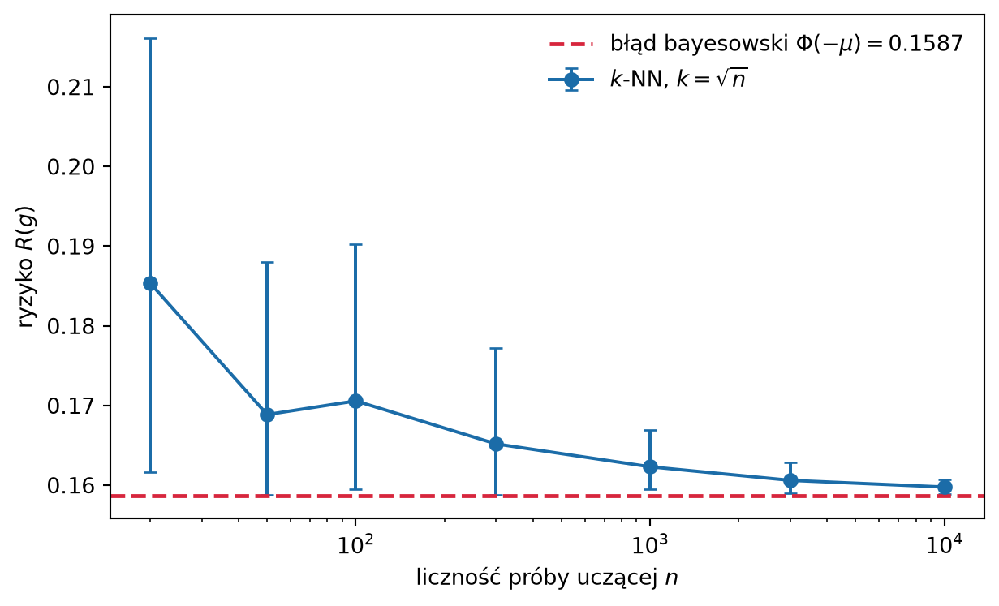

Model przypisuje obserwowanym cechom pewną odpowiedź. Skąd jednak wiadomo, która odpowiedź jest dobra? W poprzednim rozdziale wprowadziliśmy funkcję straty i ryzyko. Teraz wykorzystamy je do porównywania reguł przewidywania oraz do znalezienia najlepszej z nich.
Zaczniemy od małego przykładu, w którym wszystkie możliwości można wypisać w tabeli. Policzymy ryzyko kilku reguł, a następnie zobaczymy, jak wybierać odpowiedzi, aby je zminimalizować. Ten sam sposób rozumowania posłuży do przewidywania wartości liczbowej i do wskazywania klasy. Regresja i klasyfikacja będą dwoma zastosowaniami jednej zasady.
Przez większą część rozdziału będziemy zakładać, że znamy rozkład danych. To założenie pozwoli nam dokładnie wskazać cel uczenia: regułę, której szukalibyśmy, mając pełną wiedzę o rozkładzie. Na końcu wrócimy do sytuacji, w której zamiast rozkładu mamy jedynie próbę.
2.1 Ile kosztuje reguła przewidywania?
Sklep chce przewidywać dzienny popyt na pewien produkt. Dla uproszczenia przyjmijmy, że popyt \(Y\) może wynosić \(0\), \(2\) albo \(4\) sztuki. Znamy też rodzaj dnia \(X\): \(A\) oznacza zwykły dzień, a \(B\) – dzień lokalnego wydarzenia, które przyciąga dodatkowych klientów. Rodzaj dnia znamy przed sporządzeniem prognozy.
Przyjmujemy następujący model probabilistyczny:
Tabela 2.1: Rozkład popytu w przykładzie sklepu.
Rodzaj dnia \(x\)
\(\Prob(X=x)\)
\(\Prob(Y=0\mid X=x)\)
\(\Prob(Y=2\mid X=x)\)
\(\Prob(Y=4\mid X=x)\)
\(A\)
\(0{,}75\)
\(0{,}6\)
\(0{,}3\)
\(0{,}1\)
\(B\)
\(0{,}25\)
\(0{,}1\)
\(0{,}3\)
\(0{,}6\)
Tabela opisuje założony rozkład, nie wyniki zebrane w sześciu dniach. Mówi na przykład, że zwykłe dni stanowią \(75\%\) rozważanej populacji dni, a wśród nich zerowy popyt występuje z prawdopodobieństwem \(0{,}6\). Prawdopodobieństwo pary obliczamy ze wzoru \[
\Prob(X=A,Y=y)=\Prob(X=A)\,\Prob(Y=y\mid X=A).
\] Dla \(y=0\) otrzymujemy zatem \(0{,}75\cdot 0{,}6=0{,}45\).
Predyktor \(f\) przypisuje każdemu rodzajowi dnia prognozę liczbową. Zacznijmy od najprostszej reguły: zawsze przewiduj \(2\) sztuki, czyli \(f(A)=f(B)=2\). Oceńmy ją stratą kwadratową \(\Loss(y,a)=(y-a)^2\), gdzie \(a\) jest prognozą, a \(y\) rzeczywistym popytem. Gdy popyt wyniesie \(2\), strata będzie zerowa. Gdy wyniesie \(0\) lub \(4\), strata będzie równa \(4\).
Strata \((Y-f(X))^2=(Y-2)^2\) jest więc zmienną losową, której rozkład wynika z rozkładu pary \((X,Y)\). Poniższa tabela pokazuje, jaką wartość straty otrzymujemy dla każdej pary i z jakim prawdopodobieństwem:
\(X\)
\(Y\)
Prawdopodobieństwo pary
Strata \((Y-2)^2\)
Wkład do średniej straty
\(A\)
\(0\)
\(0{,}450\)
\(4\)
\(1{,}800\)
\(A\)
\(2\)
\(0{,}225\)
\(0\)
\(0\)
\(A\)
\(4\)
\(0{,}075\)
\(4\)
\(0{,}300\)
\(B\)
\(0\)
\(0{,}025\)
\(4\)
\(0{,}100\)
\(B\)
\(2\)
\(0{,}075\)
\(0\)
\(0\)
\(B\)
\(4\)
\(0{,}150\)
\(4\)
\(0{,}600\)
Razem
\(1\)
\(2{,}800\)
Sumując prawdopodobieństwa par prowadzących do tej samej straty, otrzymujemy jej rozkład: \[
\Prob\big((Y-2)^2=0\big)=0{,}3,\qquad
\Prob\big((Y-2)^2=4\big)=0{,}7.
\] Jej wartość oczekiwana wynosi zatem \(0\cdot 0{,}3+4\cdot 0{,}7=2{,}8\) – ten sam wynik daje suma ostatniej kolumny tabeli. Otrzymana średnia strata, \(2{,}8\), to ryzyko reguły \(f\). W pojedynczym dniu strata wynosi tu \(0\) albo \(4\). Ryzyko opisuje przeciętny wynik stosowania tej reguły w populacji dni określonej przez nasz model.
W notacji z poprzedniego rozdziału zapisujemy to jako \[
\Risk(f)=\E\big[\Loss(Y,f(X))\big].
\tag{2.1}\] Strata \(\Loss(Y,f(X))\) jest funkcją losowej pary \((X,Y)\), a więc sama jest zmienną losową. Ryzyko jest jej wartością oczekiwaną.
Ryzyko zależy więc od trzech rzeczy: rozkładu danych, funkcji straty oraz predyktora. Aby porównanie dwóch predyktorów miało sens, oceniamy je przy tym samym rozkładzie i tej samej stracie.
Wartość \(2{,}8\) nie oznacza ani \(2{,}8\%\) pomyłek, ani przeciętnej pomyłki o \(2{,}8\) sztuki. Jest to średni kwadrat pomyłki, mierzony w kwadratach jednostki popytu. Interpretacja ryzyka zależy od straty. Dopiero przy stracie \(0\)–\(1\) ryzyko będzie prawdopodobieństwem błędu.
2.2 Ryzyko liczone w dwóch krokach
Spróbujmy innej reguły stałej: \(f(A)=f(B)=1{,}5\). Dlaczego właśnie \(1{,}5\)? Tyle wynosi średni popyt w całej populacji. Zsumowanie prawdopodobieństw par z poprzedniej tabeli daje \[
\Prob(Y=0)=0{,}475,\qquad
\Prob(Y=2)=0{,}300,\qquad
\Prob(Y=4)=0{,}225,
\] a zatem \(\E[Y]=0\cdot0{,}475+2\cdot0{,}300+4\cdot0{,}225=1{,}5\). Ryzyko tej prognozy wynosi \[
\Risk(f)=0{,}475\cdot(0-1{,}5)^2
+0{,}300\cdot(2-1{,}5)^2
+0{,}225\cdot(4-1{,}5)^2=2{,}55.
\] Jest mniejsze niż ryzyko prognozy \(2\).
Przyjrzyjmy się teraz stracie prognozy \(1{,}5\)przy ustalonym rodzaju dnia. Zaczniemy od zwykłych dni, czyli warunku \(X=A\). Korzystamy wtedy z rozkładu warunkowego \(Y\mid X=A\): wartości popytu mają prawdopodobieństwa podane w wierszu \(A\) tabeli modelu. Każdej wartości popytu odpowiada określona strata:
Popyt \(y\)
\(\Prob(Y=y\mid X=A)\)
Strata \((y-1{,}5)^2\)
\(0\)
\(0{,}6\)
\(2{,}25\)
\(2\)
\(0{,}3\)
\(0{,}25\)
\(4\)
\(0{,}1\)
\(6{,}25\)
Wszystkie trzy wartości straty są różne, więc ostatnia kolumna wraz z prawdopodobieństwami opisuje rozkład straty pod warunkiem \(X=A\). Jej warunkowa wartość oczekiwana wynosi \[
\E\big[(Y-1{,}5)^2\mid X=A\big]
=0{,}6\cdot2{,}25+0{,}3\cdot0{,}25+0{,}1\cdot6{,}25
=2{,}05.
\]
Dla dni wydarzenia wartości straty pozostają takie same, ale zmieniają się ich prawdopodobieństwa. Korzystając z wiersza \(B\) tabeli modelu, otrzymujemy \[
\E\big[(Y-1{,}5)^2\mid X=B\big]
=0{,}1\cdot2{,}25+0{,}3\cdot0{,}25+0{,}6\cdot6{,}25
=4{,}05.
\]
Te dwie warunkowe wartości oczekiwane nazywamy ryzykami warunkowymi: opisują przeciętną stratę prognozy osobno dla każdego rodzaju dnia.
Co otrzymamy, gdy uśrednimy je po rozkładzie \(X\)? Zwykłe dni mają prawdopodobieństwo \(0{,}75\), a dni wydarzenia \(0{,}25\), zatem \[
0{,}75\cdot2{,}05+0{,}25\cdot4{,}05=2{,}55.
\] Otrzymaliśmy ryzyko obliczone wcześniej bezpośrednio. Ta zgodność wynika ze wzoru na iterowaną wartość oczekiwaną: \[
\E\big[(Y-1{,}5)^2\big]
=\E\Big[\E\big[(Y-1{,}5)^2\mid X\big]\Big].
\] Najpierw obliczamy wartość oczekiwaną straty przy ustalonym rodzaju dnia, a następnie uśredniamy otrzymane wartości po rozkładzie rodzajów dni.
Wprowadźmy zapis, który pozwoli powtórzyć ten rachunek dla dowolnej prognozy \(a\) i dowolnych cech \(\x\): \[
r(a\mid\x)=\E\big[\Loss(Y,a)\mid\X=\x\big].
\tag{2.2}\] W tym wyrażeniu \(\x\) i \(a\) są ustalone. Uśredniamy po możliwych wynikach \(Y\) wśród obiektów o cechach \(\x\). Przy skończenie wielu wynikach jest to po prostu suma \[
r(a\mid\x)=\sum_y\Loss(y,a)\Prob(Y=y\mid\X=\x).
\] W przykładzie pojedynczą cechą jest rodzaj dnia, więc piszemy \(r(a\mid A)\) i \(r(a\mid B)\).
Dla dowolnej reguły \(f\) otrzymujemy \[
\Risk(f)=0{,}75\,r(f(A)\mid A)+0{,}25\,r(f(B)\mid B).
\] Ogólny zapis tej samej zasady to \[
\Risk(f)=\E\big[r(f(\X)\mid\X)\big]
=\E\Big[\E\big[\Loss(Y,f(\X))\mid\X\big]\Big].
\tag{2.3}\] Jest to zastosowanie wzoru na iterowaną wartość oczekiwaną z rozdziału 1.
Gdy cechy i odpowiedź przyjmują skończenie wiele wartości, przejście to można zobaczyć bezpośrednio w sumach: \[
\begin{aligned}
\Risk(f)
&=\sum_{\x}\sum_y \Loss(y,f(\x))\Prob(\X=\x,Y=y)\\
&=\sum_{\x}\sum_y \Loss(y,f(\x))
\Prob(\X=\x)\Prob(Y=y\mid\X=\x)\\
&=\sum_{\x}\Prob(\X=\x)
\underbrace{\sum_y\Loss(y,f(\x))\Prob(Y=y\mid\X=\x)}_{r(f(\x)\mid\x)}.
\end{aligned}
\] Sumujemy tu po wartościach \(\x\) o dodatnim prawdopodobieństwie. W drugim wierszu rozpisaliśmy prawdopodobieństwo łączne jako iloczyn prawdopodobieństwa cech i prawdopodobieństwa warunkowego odpowiedzi. W trzecim wyłączyliśmy przed wewnętrzną sumę czynnik \(\Prob(\X=\x)\), który nie zależy od \(y\). Wewnętrzna suma jest ryzykiem warunkowym, a zewnętrzna uśrednia je po rozkładzie cech.
2.3 Minimalizacja punktowa
Dotąd ocenialiśmy gotowe reguły. Teraz chcemy regułę wybrać. W przykładzie sklepu oznacza to wybór dwóch liczb: prognozy \(a_A\) na zwykły dzień i prognozy \(a_B\) na dzień wydarzenia. Ich ryzyko wynosi \[
0{,}75\,r(a_A\mid A)+0{,}25\,r(a_B\mid B).
\] Ryzyko warunkowe \(r(a_A\mid A)\) jest średnią straty prognozy \(a_A\) liczoną według rozkładu popytu w zwykłe dni. Ten rozkład nie zależy od naszych prognoz, więc pierwszy składnik zależy wyłącznie od \(a_A\), a drugi z tego samego powodu wyłącznie od \(a_B\). Wagi \(0{,}75\) i \(0{,}25\) też są ustalone. Możemy więc wybrać najlepszą odpowiedź w każdej grupie osobno. Zmniejszenie straty w grupie \(A\) nie wymaga pogorszenia prognozy w grupie \(B\).
To rozumowanie nie zależy od straty kwadratowej ani od liczby grup. Prowadzi do wspólnej zasady dla regresji i klasyfikacji.
Twierdzenie 2.1 (Zasada minimalizacji punktowej) Jeżeli dla każdej rozważanej wartości cech \(\x\) wybierzemy odpowiedź \(\fopt(\x)\) minimalizującą ryzyko warunkowe \(r(a\mid\x)\) i wybory te wyznaczają dopuszczalny predyktor, to \(\fopt\) minimalizuje ryzyko \(\Risk(f)\) wśród wszystkich predyktorów.
Dowód. Niech \(f\) będzie dowolnym innym predyktorem. Dla każdej wartości cech mamy \(r(\fopt(\x)\mid\x)\le r(f(\x)\mid\x)\). Uśrednienie tej nierówności po rozkładzie cech daje \[
\Risk(\fopt)=\E\big[r(\fopt(\X)\mid\X)\big]
\le\E\big[r(f(\X)\mid\X)\big]=\Risk(f).
\]\(\square\)
Słowo punktowa oznacza, że wybieramy odpowiedź osobno dla każdej wartości cech. Zamiast od razu szukać całej funkcji, rozwiązujemy prostszy problem: przy tych cechach, którą odpowiedź opłaca się podać? Jest to podstawowa zasada statystycznej teorii decyzji (Hastie i in. 2009, rozdz. 2.4).
Istotny jest zakres swobody. Jeśli wymagamy, aby prognoza była stała, to \(a_A=a_B\) i nie możemy już wybierać tych liczb niezależnie. Podobnie, wymagając, aby prognozy leżały na jednej prostej, wiążemy odpowiedzi w różnych punktach. Najlepszy predyktor w ograniczonej klasie może zatem mieć większe ryzyko niż optimum punktowe.
Warto też rozdzielić role prawdopodobieństw. O najlepszej odpowiedzi w grupie decyduje rozkład wyniku w tej grupie. Częstość grupy określa natomiast jej udział w całkowitym ryzyku. Przy niezmienionych rozkładach warunkowych zmiana proporcji grup nie zmienia ich punktowych optimów, ale może zmienić ryzyko oraz najlepszą regułę stałą.
AdnotacjaUwaga o zakresie twierdzenia
Dla cech dyskretnych wystarczy rozpatrywać wartości o dodatnim prawdopodobieństwie. W ogólnym przypadku rozkłady warunkowe i predyktory optymalne określamy z dokładnością do zbiorów cech o prawdopodobieństwie zero. Zakładamy też mierzalność wybranego predyktora, aby jego ryzyko było określone. Wystarczy więc, aby punktowa nierówność zachodziła prawie wszędzie względem rozkładu cech. W przykładach skończonych te zastrzeżenia nie wymagają dodatkowych rachunków.
2.4 Regresja: najlepsza prognoza liczbowa
Wróćmy do straty kwadratowej. W zwykłym dniu średni popyt wynosi \[
m_A=0\cdot0{,}6+2\cdot0{,}3+4\cdot0{,}1=1,
\] a w dniu wydarzenia \[
m_B=0\cdot0{,}1+2\cdot0{,}3+4\cdot0{,}6=3.
\] Sprawdźmy, dlaczego właśnie te liczby są najlepszymi prognozami. Dla zwykłego dnia ryzyko warunkowe odpowiedzi \(a\) jest równe \[
\begin{aligned}
r(a\mid A)&=0{,}6a^2+0{,}3(2-a)^2+0{,}1(4-a)^2\\
&=a^2-2a+2{,}8=1{,}8+(a-1)^2.
\end{aligned}
\] Najmniejszą wartością jest \(1{,}8\), osiąganą dla \(a=1\). Analogicznie \(r(a\mid B)=1{,}8+(a-3)^2\), z minimum przy \(a=3\).
Kod
import numpy as npimport matplotlib.pyplot as plta = np.linspace(-0.5, 4.5, 301)fig, ax = plt.subplots(figsize=(6.5, 3.8))ax.plot(a, 1.8+ (a -1)**2, label="zwykły dzień A", color="#1B6CA8")ax.plot(a, 1.8+ (a -3)**2, label="dzień wydarzenia B", color="#D7263D")ax.scatter([1, 3], [1.8, 1.8], color=["#1B6CA8", "#D7263D"], zorder=3)ax.set(xlabel="prognoza a", ylabel="oczekiwana strata kwadratowa", ylim=(0, 15))ax.legend(frameon=False)plt.tight_layout()plt.show()

Rysunek 2.1: Ryzyko warunkowe prognozy popytu przy stracie kwadratowej. W każdej grupie wybieramy minimum odpowiedniej krzywej. Oba minima są dodatnie.
2.4.1 Dlaczego średnia?
Rachunek z przykładu można przeprowadzić dla dowolnego rozkładu wyniku. Ustalmy cechy \(\x\) i oznaczmy średnią warunkową przez \(m=\E[Y\mid\X=\x]\). Różnicę między wynikiem a prognozą rozpisujemy jako \[
Y-a=(Y-m)+(m-a).
\] Po podniesieniu do kwadratu i uśrednieniu otrzymujemy \[
\begin{aligned}
\E[(Y-a)^2\mid\X=\x]
&=\E[(Y-m)^2\mid\X=\x]\\
&\quad+2(m-a)\E[Y-m\mid\X=\x]+(m-a)^2.
\end{aligned}
\] Środkowy składnik znika, bo średnie odchylenie od średniej wynosi zero. Pierwszy składnik to wariancja warunkowa. Zatem \[
r(a\mid\x)=\Var(Y\mid\X=\x)+(m-a)^2.
\tag{2.4}\] Wariancja nie zależy od naszej prognozy. Drugi składnik jest nieujemny i zeruje się dokładnie dla \(a=m\). W każdej grupie najlepszą odpowiedzią jest więc jej średnia. Minimalizacja punktowa daje wynik dla całego predyktora.
Twierdzenie 2.2 (Optymalność funkcji regresji) Jeżeli \(\E[Y^2]<\infty\), to przy stracie kwadratowej \(\Loss(y,a)=(y-a)^2\) ryzyko minimalizuje funkcja regresji\[
\fopt(\x)=\E[Y\mid\X=\x].
\tag{2.5}\]
W naszym przykładzie jest to reguła \(\fopt(A)=1\), \(\fopt(B)=3\). Jej ryzyko wynosi \(0{,}75\cdot1{,}8+0{,}25\cdot1{,}8=1{,}8\). Możemy ją teraz porównać z innymi regułami:
Reguła
\(f(A)\)
\(f(B)\)
Ryzyko w \(A\)
Ryzyko w \(B\)
Ryzyko całkowite
Stała prognoza \(2\)
\(2\)
\(2\)
\(2{,}8\)
\(2{,}8\)
\(2{,}8\)
Najlepsza stała
\(1{,}5\)
\(1{,}5\)
\(2{,}05\)
\(4{,}05\)
\(2{,}55\)
Prognozy skrajne
\(0\)
\(4\)
\(2{,}8\)
\(2{,}8\)
\(2{,}8\)
Predyktor optymalny
\(1\)
\(3\)
\(1{,}8\)
\(1{,}8\)
\(1{,}8\)
Najlepszą prognozą stałą jest średnia całej populacji, \(\E[Y]=1{,}5\). Dowód jest taki sam jak powyżej, tylko bez warunkowania. Znajomość rodzaju dnia pozwala zastąpić jedną średnią dwiema średnimi warunkowymi i obniżyć ryzyko z \(2{,}55\) do \(1{,}8\).
Samo korzystanie z cechy nie gwarantuje poprawy: reguła \((0,4)\) jest gorsza od najlepszej stałej. Natomiast najlepsza reguła wykorzystująca cechę nie może być gorsza od najlepszej stałej, ponieważ zawsze może tę cechę zignorować.
Popyt przyjmuje tu tylko trzy wartości, ale nadal mamy do czynienia z regresją: przewidujemy wielkość liczbową, a różnica między wynikiem i prognozą ma znaczenie. Prognoza średniej nie musi być możliwą realizacją popytu. Jeśli chcielibyśmy na jej podstawie ustalić całkowitą liczbę sztuk do zamówienia, potrzebowalibyśmy dodatkowo opisu kosztów niedoboru i nadmiaru zapasu.
2.5 Klasyfikacja: najlepsza odpowiedź tak lub nie
Sklep może postawić inne pytanie: czy popyt wyniesie co najmniej \(2\) sztuki? Zachowujemy ten sam rozkład danych, lecz przewidujemy teraz klasę \[
Z=\ind(Y\ge2).
\] Litera \(Y\) nadal oznacza wielkość popytu, a \(Z\) – odpowiedź na nowe pytanie. Klasyfikator \(g\) ma zwracać \(0\) albo \(1\). Każdą pomyłkę oceniamy stratą \(1\), trafną odpowiedź stratą \(0\).
Z Tabela 2.1 odczytujemy \[
\Prob(Z=1\mid X=A)=0{,}3+0{,}1=0{,}4,\qquad
\Prob(Z=1\mid X=B)=0{,}3+0{,}6=0{,}9.
\] Porównajmy obie odpowiedzi w każdej grupie:
Rodzaj dnia
Ryzyko odpowiedzi \(0\)
Ryzyko odpowiedzi \(1\)
Najlepsza odpowiedź
\(A\)
\(0{,}4\)
\(0{,}6\)
\(0\)
\(B\)
\(0{,}9\)
\(0{,}1\)
\(1\)
Na przykład w grupie \(A\) odpowiedź \(0\) jest błędna wtedy, gdy \(Z=1\), a więc z prawdopodobieństwem \(0{,}4\). Odpowiedź \(1\) jest błędna z prawdopodobieństwem \(0{,}6\). Wybieramy pierwszą z nich.
Wykonaliśmy te same kroki co w regresji: ustaliliśmy cechy, policzyliśmy oczekiwaną stratę możliwych odpowiedzi i wybraliśmy najlepszą. Minimalizacja punktowa mówi, że złożenie tych odpowiedzi w regułę \(g(A)=0\), \(g(B)=1\) daje minimum ryzyka całkowitego: \[
\Risk(g)=0{,}75\cdot0{,}4+0{,}25\cdot0{,}1=0{,}325.
\] Tym razem liczba ma interpretację prawdopodobieństwa: reguła myli się w \(32{,}5\%\) przypadków według założonego rozkładu.
2.5.1 Najbardziej prawdopodobna klasa
Uogólnijmy rachunek. W ogólnym problemie klasyfikacji wracamy do standardowego oznaczenia odpowiedzi przez \(Y\in\{1,\ldots,K\}\). Niech \(\eta_k(\x)=\Prob(Y=k\mid\X=\x)\). Ryzyko warunkowe wskazania klasy \(a\) przy stracie \(0\)–\(1\) wynosi \[
r(a\mid\x)=\Prob(Y\ne a\mid\X=\x)=1-\eta_a(\x).
\] Najmniejsze ryzyko daje zatem klasa o największym prawdopodobieństwie. Ponownie stosujemy zasadę minimalizacji punktowej.
Twierdzenie 2.3 (Optymalność reguły Bayesa) Przy stracie \(0\)–\(1\) ryzyko minimalizuje klasyfikator bayesowski\[
\Bayes(\x)=\argmax_k\eta_k(\x).
\tag{2.6}\] Jeśli kilka klas ma takie samo największe prawdopodobieństwo, można wybrać dowolną z nich.
Nazwa nie oznacza, że przyjęliśmy rozkład na parametrach modelu. Opisuje regułę wybierającą najbardziej prawdopodobną klasę przy danych cechach. Jej ryzyko nazywamy błędem bayesowskim: \[
\Risk^*=\E\Big[1-\max_k\eta_k(\X)\Big].
\tag{2.7}\] W każdym punkcie wybieramy najlepszą klasę, a następnie uśredniamy jej prawdopodobieństwo pomyłki po rozkładzie cech.
W przykładzie sklepu \(\Prob(Z=1)=0{,}525\), więc najlepszy klasyfikator stały zawsze wskazuje \(1\). Jego błąd to \(0{,}475\). Dla porównania możemy wypisać wszystkie cztery reguły:
\(g(A)\)
\(g(B)\)
Ryzyko
Interpretacja
\(0\)
\(0\)
\(0{,}525\)
zawsze przewidujemy niski popyt
\(1\)
\(1\)
\(0{,}475\)
najlepsza reguła stała
\(0\)
\(1\)
\(0{,}325\)
reguła Bayesa
\(1\)
\(0\)
\(0{,}675\)
reguła odwrotna
Informacja o rodzaju dnia obniża najmniejsze możliwe prawdopodobieństwo błędu o \(0{,}15\), czyli o \(15\) punktów procentowych.
2.5.2 Jeden schemat, dwa zastosowania
Krok
Regresja ze stratą kwadratową
Klasyfikacja ze stratą \(0\)–\(1\)
Ustalamy cechy
\(\X=\x\)
\(\X=\x\)
Rozważamy odpowiedź
liczba \(a\)
klasa \(a\)
Liczymy przeciętną stratę
\(\E[(Y-a)^2\mid\X=\x]\)
\(1-\eta_a(\x)\)
Wybieramy minimum
średnia warunkowa
najbardziej prawdopodobna klasa
Liczymy ryzyko optimum
uśredniamy wariancje warunkowe
uśredniamy najmniejsze prawdopodobieństwa pomyłki
W obu zadaniach potrzebujemy opisu rozkładu odpowiedzi przy danych cechach. Różnią się możliwe odpowiedzi i sposób mierzenia pomyłek. Z tego powodu wartości \(1{,}8\) i \(0{,}325\) nie służą do porównania, które z tych dwóch zadań rozwiązaliśmy „lepiej”: mają inne znaczenie oraz inną jednostkę.
2.6 Dlaczego optimum ma dodatnie ryzyko?
Najlepsza prognoza popytu w zwykłym dniu wynosi \(1\), choć rzeczywisty popyt przyjmuje wartości \(0\), \(2\) i \(4\). Żadna pojedyncza liczba nie może jednocześnie trafić we wszystkie te wyniki. Podobnie najlepsza klasyfikacja zwykłego dnia to „popyt poniżej \(2\)”, ale w \(40\%\) takich dni popyt wynosi co najmniej \(2\).
Pozostaje więc niepewność, której nie usunie zmiana reguły opartej wyłącznie na rodzaju dnia. W sekcji 1.6 nazwaliśmy najmniejsze ryzyko osiągalne przy danych cechach i danej stracie błędem nieredukowalnym, a nadwyżkę ryzyka predyktora ponad to minimum – błędem redukowalnym. Teraz możemy oba składniki obliczyć.
Dla straty kwadratowej podstawiamy \(a=f(\x)\) do (2.4) i uśredniając po cechach, otrzymujemy \[
\Risk(f)=
\underbrace{\E\big[(f(\X)-\fopt(\X))^2\big]}_{\text{błąd redukowalny}}
+\underbrace{\E\big[\Var(Y\mid\X)\big]}_{\text{błąd nieredukowalny}}.
\tag{2.8}\] Drugi składnik jest ryzykiem funkcji regresji. Pierwszy mierzy, jak daleko nasza reguła odbiega od niej w średnim kwadracie.
W przykładzie sklepu dla dowolnych prognoz \(a_A,a_B\): \[
\Risk(f)=1{,}8+0{,}75(a_A-1)^2+0{,}25(a_B-3)^2.
\] Stała prognoza \(1{,}5\) ma nadwyżkę ryzyka \(0{,}75\cdot0{,}5^2+0{,}25\cdot(-1{,}5)^2=0{,}75\). Jej ryzyko \(2{,}55\) składa się więc z \(1{,}8\) nieusuwalnej zmienności oraz \(0{,}75\), które tracimy przez nieuwzględnienie rodzaju dnia.
W klasyfikacji rolę dolnej granicy pełni błąd bayesowski. W naszym przykładzie wynosi \(0{,}325\). Żadna reguła korzystająca wyłącznie z \(X\) nie obniży go, ponieważ w każdej grupie już wybraliśmy najmniejsze prawdopodobieństwo pomyłki. Odpowiednik rozkładu (2.8) dla straty 0–1 podajemy w sekcji 2.10.
Jak zaznaczyliśmy w rozdziale 1, przymiotnik „nieredukowalny” odnosi się do ustalonego zestawu cech. W przykładzie sklepu dodatkowa cecha, na przykład liczba wcześniejszych rezerwacji produktu, mogłaby rozróżnić dni, które dotąd traktowaliśmy jednakowo, i obniżyć optimum. Większa liczba dni w próbie uczącej pomaga natomiast dokładniej oszacować rozkład przy obecnych cechach; sama nie usuwa jego zmienności.
W rzeczywistym zastosowaniu nie znamy na ogół ani predyktora optymalnego, ani jego ryzyka. Samo wypłaszczenie poprawy wyników nie wystarcza więc do stwierdzenia, że osiągnęliśmy granicę możliwości. Może też świadczyć o ograniczeniach wybranej metody.
2.7 Inna strata, inna najlepsza prognoza
Dotąd w regresji używaliśmy straty kwadratowej, a w klasyfikacji straty \(0\)–\(1\). Wybór straty jest częścią sformułowania zadania: określa, jakie pomyłki uznajemy za szczególnie dotkliwe. Sprawdźmy, co się stanie po jego zmianie.
2.7.1 Strata absolutna i mediana
Strata absolutna \(\Loss(y,a)=|y-a|\) mierzy wielkość pomyłki w jednostce wyniku. Pomyłka o \(4\) sztuki jest przy niej dwa razy kosztowniejsza niż pomyłka o \(2\); przy stracie kwadratowej była cztery razy kosztowniejsza. Przy stracie kwadratowej jedna pomyłka o \(10\) sztuk kosztuje tyle co sto pomyłek o jedną sztukę, a przy stracie absolutnej – tyle co dziesięć.
W zwykłym dniu prognoza \(0\) ma przeciętną stratę absolutną \[
0{,}6\cdot0+0{,}3\cdot2+0{,}1\cdot4=1.
\] Prognoza równa średniej, czyli \(1\), daje natomiast \[
0{,}6\cdot1+0{,}3\cdot1+0{,}1\cdot3=1{,}2.
\] Średnia przestała być najlepszą odpowiedzią. W grupie \(A\) najlepsza jest mediana \(0\), a w grupie \(B\) mediana \(4\).
Przypomnijmy: mediana to liczba \(m\), dla której co najmniej połowa prawdopodobieństwa leży na lewo od \(m\) lub w \(m\) i co najmniej połowa na prawo od \(m\) lub w \(m\). Mediana nie musi być jedyna. Jej związek ze stratą absolutną można zrozumieć przez przesuwanie prognozy. Gdy przesuwamy ją w prawo, oddalamy się od wyników po lewej stronie, a zbliżamy do wyników po prawej. Przy stracie absolutnej liczy się ich prawdopodobieństwo, a nie to, jak daleko już się znajdują. Dopóki po prawej jest więcej niż połowa prawdopodobieństwa, przesunięcie w tę stronę zmniejsza przeciętną stratę. Minimum osiągamy w medianie.
Twierdzenie 2.4 (Optymalność mediany warunkowej) Jeżeli \(\E[|Y|]<\infty\), to przy stracie absolutnej \(\Loss(y,a)=|y-a|\) ryzyko minimalizuje predyktor wybierający medianę rozkładu warunkowego: \[
\fopt(\x)=\med(Y\mid\X=\x).
\tag{2.9}\]
W przykładzie sklepu porównanie wygląda następująco:
Reguła
Prognozy dla \((A,B)\)
Ryzyko kwadratowe
Ryzyko absolutne
Średnie warunkowe
\((1,3)\)
\(1{,}8\)
\(1{,}2\)
Mediany warunkowe
\((0,4)\)
\(2{,}8\)
\(1{,}0\)
W każdej kolumnie inna reguła jest lepsza. Porównujemy reguły w obrębie jednej kolumny, ponieważ każda kolumna odpowiada innemu kryterium. Symbol \(\fopt\) zawsze oznacza optimum przy określonej stracie. Gdy w dalszych rozdziałach mówimy o funkcji regresji, mamy na myśli średnią warunkową, niezależnie od tego, jaką inną stratę można rozważać.
2.7.2 Którą stratę wybrać?
Średnia i mediana różnią się najbardziej wtedy, gdy rozkład wyniku ma długi ogon. Zmieńmy w zwykłym dniu jedną wartość: zamiast popytu \(4\) z prawdopodobieństwem \(0{,}1\) niech zdarza się duże zamówienie na \(20\) sztuk. Średnia warunkowa rośnie wtedy z \(1\) do \[
0\cdot0{,}6+2\cdot0{,}3+20\cdot0{,}1=2{,}6,
\] choć w \(90\%\) zwykłych dni popyt nadal wynosi \(0\) albo \(2\). Mediana pozostaje równa \(0\). Optimum przy stracie absolutnej zależy od tego, ile prawdopodobieństwa leży po każdej stronie prognozy, a nie od tego, jak daleko leżą wyniki. Przy stracie kwadratowej rzadkie zamówienie waży bardzo dużo: pomyłka o \(18\) sztuk kosztuje \(324\).
Ta sama różnica dotyczy oszacowań z próby. Kilka nietypowych obserwacji potrafi mocno przesunąć średnią, a medianę – niewiele. Mediana jest odporna na obserwacje odstające.
Żadna z tych strat nie jest „dokładniejsza”. Wybór zależy od tego, ile kosztują pomyłki w zastosowaniu. Wróćmy do kosztów niedoboru i nadmiaru zapasu. Jeśli każda brakująca i każda nadmiarowa sztuka kosztuje tyle samo, koszt pomyłki rośnie liniowo z jej wielkością i dobrze opisuje go strata absolutna. Jeśli duże pomyłki są nieproporcjonalnie dotkliwe, bo na przykład niedobór kilkunastu sztuk oznacza utratę stałego klienta, bliższa jest strata kwadratowa. Gdy niedobór kosztuje inaczej niż nadmiar, optimum przesuwa się od mediany do innego kwantyla rozkładu warunkowego (Zadanie 2.10).
2.8 Od prawdopodobieństw do decyzji
W klasyfikacji zmiana straty może być potrzebna, gdy dwa rodzaje pomyłek mają różne konsekwencje. W przykładzie sklepu nadal \(Z=1\) oznacza popyt co najmniej \(2\) sztuk. Załóżmy, że przeoczenie takiego dnia kosztuje \(3\) jednostki, a fałszywy alarm kosztuje \(1\). Trafne decyzje mają koszt zerowy.
Dla grupy, w której prawdopodobieństwo \(Z=1\) wynosi \(p\), koszt oczekiwany odpowiedzi \(0\) jest równy \(3p\), a odpowiedzi \(1\) – \(1-p\). Dostajemy więc:
Rodzaj dnia
\(p\)
Koszt odpowiedzi \(0\)
Koszt odpowiedzi \(1\)
Najlepsza odpowiedź
\(A\)
\(0{,}4\)
\(1{,}2\)
\(0{,}6\)
\(1\)
\(B\)
\(0{,}9\)
\(2{,}7\)
\(0{,}1\)
\(1\)
Teraz w obu grupach wybieramy \(1\). W zwykłym dniu wysoki popyt jest mniej prawdopodobny niż niski, ale koszt jego przeoczenia przeważa nad częstszym, mniej kosztownym fałszywym alarmem.
Ryzyko nowej reguły wynosi \(0{,}75\cdot0{,}6+0{,}25\cdot0{,}1=0{,}475\). Poprzednia reguła \((0,1)\) ma przy tych kosztach ryzyko \(0{,}75\cdot1{,}2+0{,}25\cdot0{,}1=0{,}925\). Zmiana zwiększa prawdopodobieństwo błędu z \(32{,}5\%\) do \(47{,}5\%\), a jednocześnie zmniejsza oczekiwany koszt z \(0{,}925\) do \(0{,}475\). To dwie różne miary jakości tej samej decyzji.
2.8.1 Próg decyzyjny
Odpowiedź \(1\) opłaca się, gdy \(1-p\le3p\), czyli gdy \(p\ge1/4\). Zmiana kosztów przesunęła próg z \(1/2\) do \(1/4\). Ogólniej, jeśli koszt fałszywie ujemnej decyzji to \(c_{10}>0\), a koszt fałszywie dodatniej to \(c_{01}>0\), przy zerowych kosztach trafnych decyzji wybieramy klasę \(1\), gdy \[
p\ge\frac{c_{01}}{c_{01}+c_{10}}.
\] Jest to próg minimalizujący oczekiwany koszt (Elkan 2001). Przy równości obie decyzje kosztują przeciętnie tyle samo.
Dla wielu klas ten sam rachunek można zapisać za pomocą tabeli kosztów \(c_{ka}\): kosztu odpowiedzi \(a\), gdy prawdziwa klasa to \(k\). Ryzyko warunkowe odpowiedzi \(a\) wynosi \(\sum_k c_{ka}\eta_k(\x)\). Zasada minimalizacji punktowej daje więc \[
\fopt(\x)=\argmin_a\sum_k c_{ka}\eta_k(\x).
\tag{2.10}\] To ta sama zasada, którą stosowaliśmy wcześniej; zmienił się sposób wyceniania odpowiedzi.
WskazówkaDobry model, zły próg
Prawdopodobieństwa wynikają z rozkładu danych, a koszty z zastosowania. W naszym przykładzie prawdopodobieństwa \(0{,}4\) i \(0{,}9\) nie zmieniły się po zmianie kosztów. Zmieniły się decyzje podejmowane na ich podstawie. Dlatego warto rozdzielać oszacowanie prawdopodobieństwa od wyboru progu. Sama etykieta klasy nie zawiera informacji wystarczającej do ponownego wyboru decyzji przy innych kosztach.
2.9 Od znanego rozkładu do uczenia z danych
W przykładzie sklepu potrafiliśmy wyznaczyć optymalne prognozy, ponieważ podaliśmy cały rozkład w tabeli. W zastosowaniu rzeczywistym mamy obserwacje \((x_i,y_i)\), a prawdopodobieństwa i średnie są nieznane. Wyprowadzone reguły mówią jednak, czego szukać w danych.
Jeżeli każda grupa występuje wielokrotnie, średni popyt możemy oszacować średnią zaobserwowanych wyników w tej grupie. Prawdopodobieństwo wysokiego popytu oszacujemy odsetkiem dni, w których wystąpił. Otrzymamy predyktor \(\widehat f\) lub klasyfikator \(\widehat g\). Daszek przypomina, że zależą od konkretnej próby. Inna próba może dać inne oszacowania.
Przy cechach ciągłych, takich jak temperatura, powierzchnia mieszkania czy dochód, dokładne powtórzenia całego zestawu cech zwykle nie występują. Nie możemy po prostu utworzyć licznej grupy dla każdej wartości \(\x\). Musimy korzystać z innych obserwacji: na przykład z podobnych obiektów albo z zależności opisanej wspólnym wzorem. Pierwszą możliwość rozwiniemy w rozdziale 3.
Także ryzyka nie obliczymy zazwyczaj dokładnie, bo nie znamy rozkładu. Dla ustalonej reguły \(f\) możemy je oszacować na niezależnych nowych przypadkach, obliczając średnią strat \[
\frac1N\sum_{i=1}^N\Loss(y_i,f(\x_i)).
\] Ta liczba zmienia się między próbami. Nawet dla optymalnej reguły zaobserwowany odsetek błędów może być niższy lub wyższy od błędu bayesowskiego. Nie przeczy to optymalności: dolna granica dotyczy ryzyka, a nie każdego wyniku skończonego eksperymentu.
Jeśli do oceny używamy danych, na których regułę dobrano, powstaje jeszcze inny problem: reguła mogła dopasować się do przypadkowych własności tych danych. Dlatego trzeba odróżniać ryzyko, jego ocenę na nowych przypadkach i błąd treningowy. Wrócimy do tego w rozdziałach 4 i 5.
Wspólny cel pozostaje prosty: przy danych cechach wybierać odpowiedź o najmniejszej oczekiwanej stracie. Poznane metody będą różnić się przede wszystkim sposobem, w jaki odtwarzają potrzebne informacje z ograniczonej próby.
2.10 Rozszerzenia: inne decyzje i ciągłe cechy
AdnotacjaMateriał nieobowiązkowy
Poniższe ramki nie są wymagane w tekście głównym ani w zadaniach podstawowych. Narzędzia potrzebne w każdej z nich podano na jej początku.
Uzupełnienia rozwijają wspólny schemat w kilku kierunkach.
AdnotacjaOcena prawdopodobieństw
Model może zwracać prawdopodobieństwo klasy, zamiast od razu wybierać etykietę. Dla klas \(Y\in\{0,1\}\) prognozę \(p\in[0,1]\) można oceniać stratą Briera\(\Loss_{\mathrm B}(y,p)=(y-p)^2\)(Brier 1950). Ponieważ \(\E[Y\mid\X=\x]=\eta(\x)\), optymalność średniej daje od razu najlepszą prognozę \(p=\eta(\x)\).
Innym kryterium jest strata logarytmiczna: \[
\Loss_{\log}(y,p)=
\begin{cases}-\ln p,&y=1,\\-\ln(1-p),&y=0.\end{cases}
\] Jej ryzyko warunkowe dla \(0<p<1\) wynosi \(-\eta\ln p-(1-\eta)\ln(1-p)\). Jeśli \(0<\eta<1\), pochodna jest równa \((p-\eta)/(p(1-p))\), więc minimum przypada przy \(p=\eta\). Dla \(\eta=0\) lub \(1\) minimum osiągamy na odpowiednim końcu przedziału, przyjmując zerową stratę dla pewnej, trafnej prognozy. Pewna błędna prognoza daje stratę nieskończoną.
Obie straty nagradzają podanie prawdziwego prawdopodobieństwa. Są przykładami strat właściwych(Gneiting i Raftery 2007). Ocena prawdopodobieństw i ocena decyzji przy określonych kosztach to dwa różne zadania. Dobre oszacowanie prawdopodobieństwa można następnie wykorzystać przy różnych progach.
AdnotacjaOdmowa odpowiedzi
Możemy dopuścić dodatkowe działanie: odmowę, na przykład przekazanie przypadku do dodatkowej oceny. Niech trafna klasyfikacja kosztuje \(0\), pomyłka \(1\), a odmowa stałą kwotę \(d\in(0,1)\).
Najlepsza klasa ma ryzyko warunkowe \(1-\max_k\eta_k(\x)\), odmowa ma ryzyko \(d\). Wystarczy porównać te dwie liczby: \[
\fopt(\x)=
\begin{cases}
\Bayes(\x),&1-\max_k\eta_k(\x)\le d,\\
\text{odmowa},&1-\max_k\eta_k(\x)>d.
\end{cases}
\tag{2.11}\] Jest to reguła Chowa(Chow 1970). W przykładzie sklepu przy \(d=0{,}2\) odmawiamy w zwykłe dni, a w dni wydarzenia odpowiadamy \(1\). Ryzyko wynosi \(0{,}75\cdot0{,}2+0{,}25\cdot0{,}1=0{,}175\). Nie jest to odsetek pomyłek: uwzględnia też koszt odmowy w \(75\%\) dni. Zmiana zbioru działań i straty zmieniła problem optymalizacji.
AdnotacjaNadwyżka ryzyka w klasyfikacji
Dla dowolnego klasyfikatora \(g\) przy stracie \(0\)–\(1\): \[
\Risk(g)=\Risk^*+
\E\Big[\max_k\eta_k(\X)-\eta_{g(\X)}(\X)\Big].
\tag{2.12}\] Wynika to z dodania i odjęcia \(\max_k\eta_k(\x)\) w wyrażeniu \(1-\eta_{g(\x)}(\x)\), a następnie uśrednienia po cechach. Nadwyżka mierzy prawdopodobieństwo trafienia utracone wskutek wyboru klasy innej niż najbardziej prawdopodobna. Jest nieujemna. Dla dwóch klas wynosi \(\E[|2\eta(\X)-1|\ind(g(\X)\ne\Bayes(\X))]\): wybór gorszej klasy jest mniej kosztowny tam, gdzie obie klasy są prawie równie prawdopodobne.
AdnotacjaPrzykład z ciągłą cechą: dwie klasy normalne
Wymagane są gęstość i dystrybuanta rozkładu normalnego. Eksperyment z metodą najbliższych sąsiadów można przeczytać po rozdziale 3. Zachowujemy go jako punkt odniesienia dla analizy tej metody i zaawansowanych zadań.
Rozważmy dwie równoliczne klasy, \(\pi_0 = \pi_1 = \tfrac12\), i jedną cechę \(X\), która w klasie \(0\) ma rozkład \(\Nrozk(-\mu, 1)\), a w klasie \(1\) rozkład \(\Nrozk(\mu, 1)\), \(\mu > 0\). Oznaczając przez \(\varphi\) gęstość, a przez \(\Phi\) dystrybuantę rozkładu normalnego standardowego, mamy \(p(x \mid Y=0) = \varphi(x + \mu)\) i \(p(x \mid Y=1) = \varphi(x - \mu)\). Cecha jest ciągła, a klasa dyskretna, więc \(\eta(x) = \Prob(Y=1 \mid X=x)\) wyznaczamy ze wzoru Bayesa (1.2): \[
\eta(x) = \frac{\varphi(x - \mu)}{\varphi(x - \mu) + \varphi(x + \mu)}
= \frac{1}{1 + e^{-2\mu x}} .
\] Zatem \(\eta(x) > \tfrac12\) dokładnie dla \(x > 0\), reguła bayesowska to \(\Bayes(x) = \ind(x > 0)\), a błąd bayesowski wynosi \[
\Risk^{*} = \Prob\big(\Nrozk(\mu, 1) < 0\big) = \Phi(-\mu).
\]
Kod
import numpy as npimport matplotlib.pyplot as pltfrom scipy.stats import normfrom sklearn.neighbors import KNeighborsClassifierrng = np.random.default_rng(7)mu =1.0blad_bayesa = norm.cdf(-mu)def probka(n, rng):"""Losuje n obserwacji z równoliczną mieszanką N(-mu,1) i N(mu,1).""" y = rng.integers(0, 2, n) x = rng.normal(np.where(y ==1, mu, -mu), 1.0)return x.reshape(-1, 1), y# Ryzyko przybliżamy całkowaniem numerycznym, a nie na zbiorze testowym. Rozkład jest nam znany,# więc zamiast losować dane testowe całkujemy definicję ryzyka:## R(g) = 0.5 * P(g(X)=0, klasa 1) + 0.5 * P(g(X)=1, klasa 0)# = 0.5 * \int phi(x-mu) 1{g(x)=0} dx + 0.5 * \int phi(x+mu) 1{g(x)=1} dx## Zaleta jest zasadnicza: wynik nie ma szumu Monte Carlo ze zbioru testowego.# Pozostaje błąd numeryczny całkowania na skończonej siatce.siatka = np.linspace(-7, 7, 4001)gestosc_klasy1 = norm.pdf(siatka - mu)gestosc_klasy0 = norm.pdf(siatka + mu)def ryzyko_calkowaniem(klasyfikator):"""Przybliżenie prawdopodobieństwa błędu przez całkowanie na siatce.""" etykiety = klasyfikator.predict(siatka.reshape(-1, 1)) calka =0.5* np.trapezoid(np.where(etykiety ==0, gestosc_klasy1, 0.0), siatka) \+0.5* np.trapezoid(np.where(etykiety ==1, gestosc_klasy0, 0.0), siatka)return calkalicznosci = np.array([20, 50, 100, 300, 1000, 3000, 10_000])powtorzenia =25bledy = np.empty((len(licznosci), powtorzenia))for i, n inenumerate(licznosci):for j inrange(powtorzenia): X_tr, y_tr = probka(n, rng)# k rosnące z n: warunek zbieżności k-NN do reguły bayesowskiej# (k -> oo oraz k/n -> 0); szczegóły w rozdziale [-@sec-knn]. k =max(1, int(round(np.sqrt(n)))) klf = KNeighborsClassifier(n_neighbors=k).fit(X_tr, y_tr) bledy[i, j] = ryzyko_calkowaniem(klf)srednie = bledy.mean(axis=1)# Rozkład ryzyka po próbach uczących jest skośny i ograniczony z dołu przez# błąd bayesowski, więc przedział "średnia +- odchylenie" wystawałby poniżej# granicy, której przekroczyć się nie da. Używamy kwantyli.kwantyle = np.quantile(bledy, [0.1, 0.9], axis=1)wasy = np.abs(kwantyle - srednie)fig, ax = plt.subplots(figsize=(6.5, 4.0))ax.errorbar(licznosci, srednie, yerr=wasy, marker="o", capsize=3, color="#1B6CA8", label=r"$k$-NN, $k=\sqrt{n}$")ax.axhline(blad_bayesa, color="#D7263D", ls="--", lw=1.8, label=rf"błąd bayesowski $\Phi(-\mu) = {blad_bayesa:.4f}$")ax.set_xscale("log")ax.set_xlabel("liczność próby uczącej $n$")ax.set_ylabel("ryzyko $R(g)$") # matplotlib nie zna makr z _macros.texax.legend(frameon=False)plt.tight_layout()plt.show()

Rysunek 2.2: Ryzyko klasyfikatora \(k\)-NN przybliżone całkowaniem numerycznym, w zależności od liczności próby uczącej; cecha ma w klasach rozkłady \(\Nrozk(-1, 1)\) i \(\Nrozk(1, 1)\). Punkty to średnie z 25 niezależnych prób uczących, wąsy – kwantyle rzędu \(0{,}1\) i \(0{,}9\). Błąd bayesowski \(\Phi(-1) \approx 0{,}1587\) wyznacza poziom, poniżej którego nie schodzi żaden klasyfikator, niezależnie od liczby obserwacji.
Wykres porównuje ryzyko reguł wyuczonych z różnych prób ze znanym błędem bayesowskim. Uśrednienie dotyczy tutaj także losowości próby uczącej. Ryzyko każdej dopasowanej reguły przybliżamy całkowaniem numerycznym; unikamy szumu zbioru testowego, ale pozostaje błąd numeryczny. Teoretyczna dolna granica dotyczy dokładnego ryzyka. W przykładzie wzrost liczności próby przybliża wyniki do optimum. Tempo tej poprawy zależy od rozkładu i metody.
Uwagi bibliograficzne
Przystępne wprowadzenie do predykcji, funkcji regresji i błędu bayesowskiego przedstawiają James i in. (2023). Szersze ujęcie wspólnego schematu minimalizacji oczekiwanej straty zawiera podręcznik Hastie i in. (2009). Statystyczną teorię decyzji, z rozróżnieniem przewidywania wyniku oraz wyboru działania, rozwijają także Bishop (2006) i Murphy (2022).
Czytelnik zainteresowany ścisłą teorią klasyfikacji znajdzie ją w monografii Devroye i in. (1996), a teorię regresji nieparametrycznej w książce Györfi i in. (2002). Są to lektury wymagające większego przygotowania probabilistycznego niż główny tekst tego rozdziału.
Koszty niesymetryczne i ich wpływ na próg klasyfikacji omawia Elkan (2001). Straty do oceny prognoz probabilistycznych systematycznie przedstawiają Gneiting i Raftery (2007); źródłową pracą dotyczącą straty kwadratowej dla prawdopodobieństw jest Brier (1950). Regułę klasyfikacji z możliwością odmowy bada Chow (1970).
Zadania
Pierwsze zadania prowadzą od obliczenia ryzyka do samodzielnego wyboru reguły. Następnie pojawiają się zmiana kosztów, wnioskowanie z informacji pośredniej i własności ogólne. Zadania oznaczone Rozszerzenie można pominąć przy pierwszej lekturze; wskazujemy w nich dodatkowe potrzebne narzędzia.
Zadanie 2.1Od straty do ryzyka. Zespół wsparcia technicznego przewiduje liczbę zgłoszeń podczas wieczornego dyżuru. Przed rozpoczęciem dyżuru wiadomo, czy będzie to zwykły wieczór (\(X=A\)), czy wieczór po wdrożeniu nowej wersji systemu (\(X=B\)). W uproszczonym modelu liczba zgłoszeń \(Y\) przyjmuje tylko wartości \(0\), \(1\) i \(3\). Rozkład opisuje poniższa tabela.
\(x\)
\(\Prob(X=x)\)
\(\Prob(Y=0\mid X=x)\)
\(\Prob(Y=1\mid X=x)\)
\(\Prob(Y=3\mid X=x)\)
\(A\)
\(0{,}6\)
\(0{,}5\)
\(0{,}4\)
\(0{,}1\)
\(B\)
\(0{,}4\)
\(0{,}1\)
\(0{,}2\)
\(0{,}7\)
W kolejnych zadaniach będziemy wracać do tego rozkładu.
Wypisz sześć prawdopodobieństw łącznych \(\Prob(X=x,Y=y)\). Sprawdź, że sumują się do \(1\).
Pierwsza reguła przewiduje zawsze jedno zgłoszenie: \(f(A)=f(B)=1\). Wypisz stratę kwadratową przy każdej parze \((x,y)\) i oblicz ryzyko.
Druga reguła przewiduje zero zgłoszeń w zwykły wieczór, a trzy po wdrożeniu: \(h(A)=0\), \(h(B)=3\). Powtórz dla niej rachunek. Która reguła ma mniejsze ryzyko kwadratowe?
Wyjaśnij różnicę między stratą w pojedynczym wieczorze a ryzykiem. Co ryzyko mówi o błędach prognoz w wielu takich wieczorach? W jakiej jednostce wyrażone są obie wielkości?
Zadanie 2.2Dwa etapy uśredniania. Dla obu reguł z Zadanie 2.1:
Oblicz ryzyko warunkowe osobno w grupach \(A\) i \(B\).
Odzyskaj ryzyko całkowite jako średnią ważoną. Dlaczego zwykła średnia arytmetyczna ryzyk grup byłaby tu niewłaściwa?
Zmień proporcje grup na \(\Prob(X=A)=0{,}2\), \(\Prob(X=B)=0{,}8\), pozostawiając rozkłady warunkowe bez zmian. Oblicz nowe ryzyka.
Wskaż, które elementy rachunku zmieniły się w punkcie c), a które pozostały takie same. Czy ranking reguł się zmienił?
Zadanie 2.3Najlepsza prognoza liczbowa. Korzystaj z rozkładu z Zadanie 2.1 z pierwotnymi proporcjami grup.
Oblicz średnią i wariancję warunkową w każdej grupie.
Podaj predyktor optymalny przy stracie kwadratowej i jego ryzyko.
Znajdź najlepszą regułę stałą i oblicz jej ryzyko. Ile zyskujemy dzięki informacji o rodzaju dyżuru?
Zapisz ryzyko dowolnej reguły \((a_A,a_B)\) jako sumę ryzyka optymalnego i dwóch nieujemnych składników. Wykorzystaj ten zapis do sprawdzenia wyników Zadanie 2.1.
Zadanie 2.4To samo zjawisko, inne pytanie. W rozkładzie z Zadanie 2.1 niech \(Z=\ind(Y\ge1)\).
Oblicz prawdopodobieństwo klasy \(1\) w obu grupach.
W każdej grupie porównaj ryzyka odpowiedzi \(0\) i \(1\) przy stracie \(0\)–\(1\). Czy optimum jest w obu grupach jednoznaczne?
Znajdź najmniejsze ryzyko całkowite i porównaj je z ryzykiem najlepszego klasyfikatora stałego.
Czy informacja o \(X\) zmienia prawdopodobieństwa klas? Czy musi dzięki temu poprawiać najlepszą decyzję przy stracie \(0\)–\(1\)? Porównaj z jej rolą w regresji w Zadanie 2.3.
Zadanie 2.5Zmiana kryterium. Korzystaj z rozkładu z Zadanie 2.1.
Znajdź wszystkie mediany warunkowe. W grupie \(A\) sprawdź również liczby między \(0\) a \(1\).
Wybierz po jednej medianie w każdej grupie i oblicz ryzyko absolutne otrzymanej reguły.
Oblicz ryzyko absolutne reguły średnich warunkowych.
Wybierz mediany \(0\) i \(3\), oblicz też ich ryzyko kwadratowe i zestaw obie reguły pod obiema stratami. Czy jedna z nich jest najlepsza niezależnie od sposobu oceny?
Zadanie 2.6Symulacja: od ryzyka do wyniku eksperymentu. Wykorzystaj rozkład i optymalny predyktor kwadratowy z Zadanie 2.3.
Wylosuj \(N=100\) niezależnych przypadków: najpierw rodzaj dyżuru, potem liczbę zgłoszeń z właściwego rozkładu warunkowego. Ustal ziarno generatora, aby wynik dało się odtworzyć.
Oblicz średnią strat ustalonego predyktora i porównaj z jego dokładnym ryzykiem. Nie ucz predyktora na wylosowanych danych.
Powtórz eksperyment \(200\) razy, a następnie wykonaj go dla \(N=1000\). Porównaj rozrzut otrzymanych średnich strat.
Czy średnia strata na próbie może spaść poniżej ryzyka optimum? Wyjaśnij, dlaczego nie narusza to zasady minimalizacji punktowej.
Zadanie 2.7Koszt a częstość pomyłek. W przykładzie sklepu pominięcie wysokiego popytu kosztuje dziesięć razy więcej niż fałszywy alarm. Trafne decyzje mają koszt zerowy, fałszywy alarm kosztuje \(1\).
Oblicz oczekiwany koszt obu odpowiedzi w każdej grupie.
Wyznacz próg decyzyjny i optymalną regułę.
Porównaj tę regułę z regułą Bayesa dla straty \(0\)–\(1\): podaj prawdopodobieństwa obu typów błędu i całkowite ryzyko kosztowe.
Zilustruj wyniki symulacją na niezależnych dniach. Co tracimy, oceniając obie reguły wyłącznie odsetkiem pomyłek?
Zadanie 2.8 Oto klasyczny problem taksówek Kahnemana i Tversky’ego (Kahneman 2011, rozdz. 16). W mieście jeżdżą taksówki dwóch przedsiębiorstw: \(85\%\) z nich należy do spółki Zielony, \(15\%\) do spółki Niebieski. Jedna z taksówek spowodowała wypadek i odjechała. Świadek zeznaje, że była niebieska. Test wiarygodności wykazał, że w warunkach takich jak w chwili wypadku świadek myli kolor w \(20\%\) przypadków, niezależnie od tego, jaki kolor widzi. Potraktujmy zeznanie świadka jako cechę \(X\), a przedsiębiorstwo – jako klasę \(Y\), z klasą pozytywną Niebieski.
Wyznacz \(\eta(x)=\Prob(Y=\text{Niebieski}\mid X=x)\) dla obu możliwych zeznań i porównaj obie wartości z prawdopodobieństwem a priori \(\Prob(Y=\text{Niebieski})=0{,}15\). W którą stronę i jak mocno każde z zeznań przesuwa ocenę, że wypadek spowodowała taksówka niebieska?
Wyznacz klasyfikator bayesowski przy stracie 0–1 i jego błąd. Porównaj go z błędem reguły „wierz świadkowi” oraz klasyfikatora stałego. Jak pogodzić wynik z odpowiedzią z punktu a)?
Przy jakim prawdopodobieństwie pomyłki świadka jego zeznanie zaczyna zmieniać decyzję klasyfikatora bayesowskiego przy stracie 0–1?
Załóżmy, że niesłuszne oczyszczenie spółki Niebieski kosztuje \(c\) razy więcej niż niesłuszne obwinienie. Korzystając z (2.10), wyznacz najmniejsze \(c\), przy którym zeznanie „niebieska” prowadzi do decyzji Niebieski. Odnieś wynik do ramki „Dobry model, zły próg”.
Zadanie 2.9Zmiana wag. W przykładzie sklepu zachowaj rozkłady warunkowe, ale zastąp proporcje dni przez \(\Prob(X=A)=q\), \(\Prob(X=B)=1-q\), gdzie \(0<q<1\).
Znajdź optymalny predyktor kwadratowy, jego ryzyko oraz najlepszą prognozę stałą w zależności od \(q\).
Powtórz analizę dla klasyfikacji wysokiego popytu przy stracie \(0\)–\(1\). Które wielkości zależą od proporcji dni?
Rozszerzenie. Wykaż, że przy ryzyku ważonym \(\E[w(\X)(Y-f(\X))^2]\), gdzie \(w(\x)>0\) i \(\E[w(\X)Y^2]<\infty\), średnia warunkowa nadal jest optymalna (zakładamy też \(\E[|Y|]<\infty\)). Skorzystaj z minimalizacji punktowej. Wyjaśnij, dlaczego wagi mogą zmieniać wartość ryzyka, nie zmieniając optimum punktowego.
Zadanie 2.10Rozszerzenie: kwantyle. Potrzebna jest znajomość dystrybuanty i pochodnych. Rozważ stratę pinball (kwantylową) o parametrze \(\tau \in (0,1)\): \[
\Loss_\tau(y, a) = \begin{cases}
\tau (y - a), & y \ge a, \\
(1-\tau)(a - y), & y < a.
\end{cases}
\] Załóż, że przy ustalonych cechach rozkład wyniku ma ciągłą dystrybuantę \(F\) i skończony pierwszy moment. Wykaż, że pochodna ryzyka warunkowego względem \(a\) wynosi \(F(a)-\tau\). Wywnioskuj, że minimum osiąga kwantyl rzędu \(\tau\). Wskazówka: rozpatrz osobno wyniki mniejsze i większe od \(a\). Dla \(\tau=1/2\) strata pinball jest połową straty absolutnej; sprawdź zgodność optimum z Twierdzenie 2.4.
Zadanie 2.11Rozszerzenie: rozkłady normalne. Wymagane są gęstość, dystrybuanta i wzór Bayesa.
Dla dwóch klas o rozkładach \(\Nrozk(-\mu, \sigma^2)\) i \(\Nrozk(\mu, \sigma^2)\) z równymi prawdopodobieństwami a priori wyprowadź wzór na błąd bayesowski w zależności od \(\mu\) i \(\sigma\). Dla jakiej wartości \(\mu/\sigma\) błąd bayesowski spada poniżej 1%?
Zadanie 2.12Rozszerzenie: klasy niezrównoważone. Wymagane są rozkłady normalne oraz metoda k-NN z rozdziału 3.
Zmodyfikuj eksperyment z Rysunek 2.2 tak, aby klasy miały prawdopodobieństwa a priori \(\pi_0 = 0{,}9\) i \(\pi_1 = 0{,}1\) (klasa \(0\) to ta, w której \(X \sim \Nrozk(-\mu, 1)\)). Wyznacz nowy błąd bayesowski i porównaj go z błędem klasyfikatora trywialnego, który zawsze wskazuje klasę częstszą. Kiedy \(k\)-NN zaczyna być od niego lepszy?
Zadanie 2.13Rozszerzenie: zmiana populacji. Wymagane są wzór Bayesa i rachunek na szansach.
Korekta prawdopodobieństw a priori. Model klasyfikacyjny uczono na próbie, w której klasy występowały z częstościami \(\pi'_k\), na przykład na próbie zbalansowanej. Model zwraca więc oszacowania \(\eta'_k(\x) = \Prob'(Y = k \mid \X = \x)\). W populacji, w której model będzie stosowany, klasy występują z częstościami \(\pi_k\), a rozkłady cech w obrębie klas \(p(\x \mid Y = k)\) są takie same jak w próbie. Korzystając ze wzoru Bayesa, wykaż, że \[
\eta_k(\x) = \frac{\eta'_k(\x)\, \pi_k / \pi'_k}
{\sum_{j=1}^{K} \eta'_j(\x)\, \pi_j / \pi'_j} .
\] Pokaż, że w przypadku dwuklasowym korekta sprowadza się do pomnożenia szans \(\eta(\x) / (1 - \eta(\x))\) przez stałą, i wyznacz tę stałą. Model wykrywania oszustw uczono na próbie zbalansowanej, a w populacji oszustwa stanowią 1% transakcji. Dla pewnej transakcji model zwrócił \(0{,}8\). Jakie jest prawdopodobieństwo oszustwa po korekcie? Wyjaśnij, dlaczego tej korekty nie da się przeprowadzić dla modelu zwracającego wyłącznie etykiety (por. ramka „Dobry model, zły próg”).
Zadanie 2.14Rozszerzenie: własności średniej i mediany. Wymagane są nierówność Jensena i pojęcie rozstępu międzykwartylowego.
Wykaż, że dla dowolnego rozkładu o skończonej wariancji średnia \(\mu\) i mediana \(m\) spełniają \(|\mu - m| \le \sigma\). (Wskazówka: skorzystaj z Twierdzenie 2.4 i nierówności Jensena.) Podaj rozkład, dla którego ta różnica jest bliska \(\sigma\). Następnie pokaż, że przy ustalonym rozstępie międzykwartylowym różnica \(|\mu - m|\) może być dowolnie duża. Co to mówi o odporności obu predyktorów?
Bishop, Christopher M. 2006. Pattern Recognition and Machine Learning. Information Science and Statistics. Springer.
Chow, C. K. 1970. „On Optimum Recognition Error and Reject Tradeoff”. IEEE Transactions on Information Theory 16 (1): 41–46. https://doi.org/10.1109/TIT.1970.1054406.
Devroye, Luc, László Györfi i Gábor Lugosi. 1996. A Probabilistic Theory of Pattern Recognition. Stochastic Modelling and Applied Probability 31. Springer. https://doi.org/10.1007/978-1-4612-0711-5.
Elkan, Charles. 2001. „The Foundations of Cost-Sensitive Learning”. Proceedings of the Seventeenth International Joint Conference on Artificial Intelligence (IJCAI), 973–78.
Gneiting, Tilmann i Adrian E. Raftery. 2007. „Strictly Proper Scoring Rules, Prediction, and Estimation”. Journal of the American Statistical Association 102 (477): 359–78. https://doi.org/10.1198/016214506000001437.
Györfi, László, Michael Kohler, Adam Krzyżak i Harro Walk. 2002. A Distribution-Free Theory of Nonparametric Regression. Springer Series in Statistics. Springer. https://doi.org/10.1007/b97848.
Hastie, Trevor, Robert Tibshirani i Jerome Friedman. 2009. The Elements of Statistical Learning: Data Mining, Inference, and Prediction. 2. wyd. Springer.
James, Gareth, Daniela Witten, Trevor Hastie, Robert Tibshirani i Jonathan Taylor. 2023. An Introduction to Statistical Learning with Applications in Python. Springer Texts in Statistics. Springer.
Kahneman, Daniel. 2011. Thinking, Fast and Slow. Farrar, Straus and Giroux.
Murphy, Kevin P. 2022. Probabilistic Machine Learning: An Introduction. MIT Press.